Image gallery
Every still Wayne sent, kept. Picks for live use are marked. Midjourney, August 2026, pond / ripple / mark set.
In use
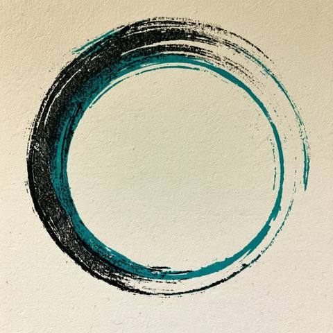
Avatar / mark — IMG_3541
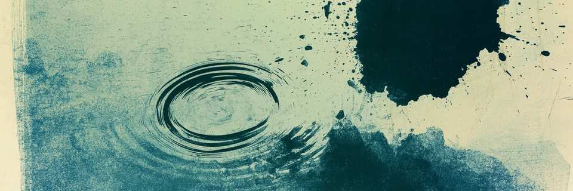
X header — crop of IMG_3538
Alternate header crop of the literal pond (IMG_3549) is in selected/header-pond.jpg if we want it later.
All originals
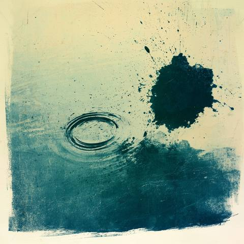
IMG_3537 — print, teal field + ripple + splatter
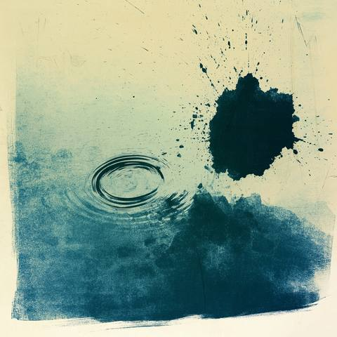
IMG_3538 — same family, header source
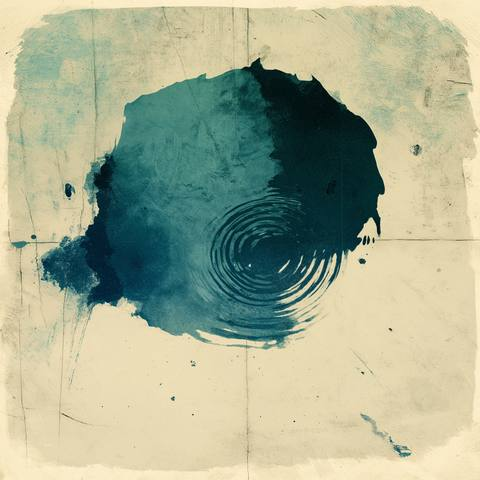
IMG_3539 — blotch with inner ripples
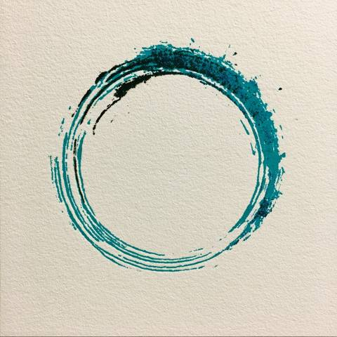
IMG_3540 — teal enso
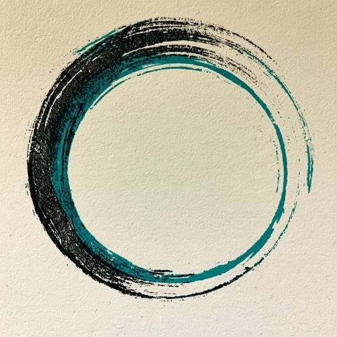
IMG_3541 — black + teal enso (avatar)
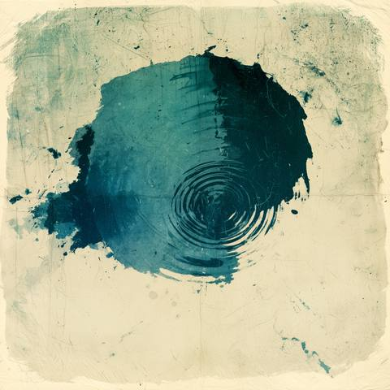
IMG_3542 — circular splash + ripples
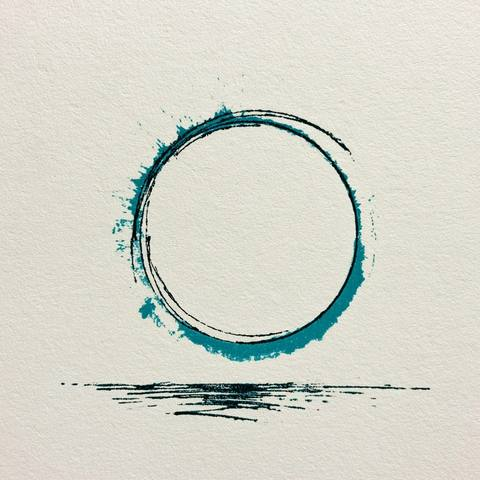
IMG_3543 — stamp halo + horizon
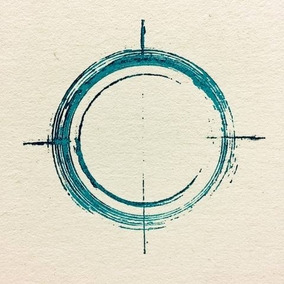
IMG_3544 — circle with crosshairs
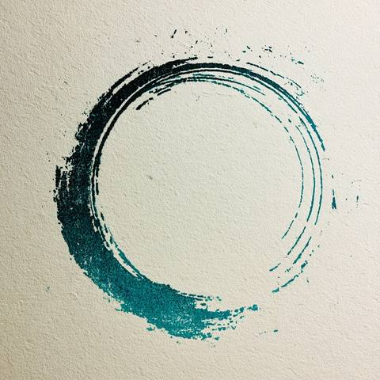
IMG_3545 — dark teal enso
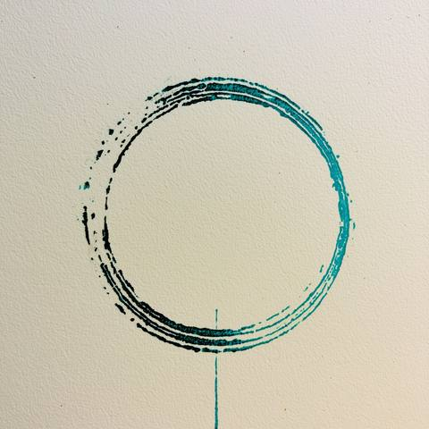
IMG_3546 — ring with a stem
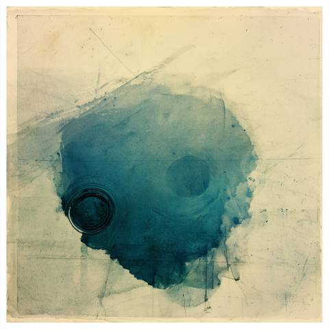
IMG_3547 — wash + drafting lines
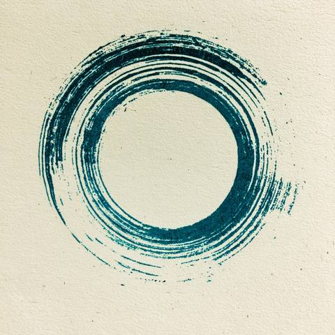
IMG_3548 — concentric brush ring
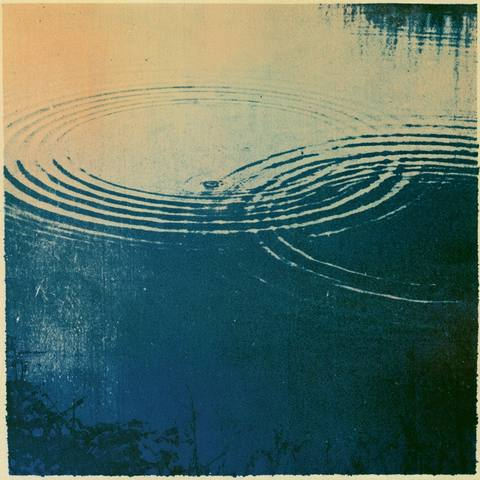
IMG_3549 — pond ripples
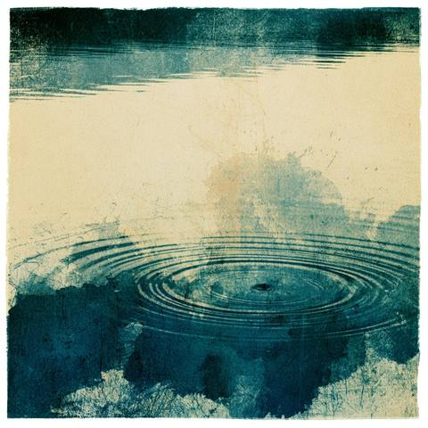
IMG_3550 — drop and rings